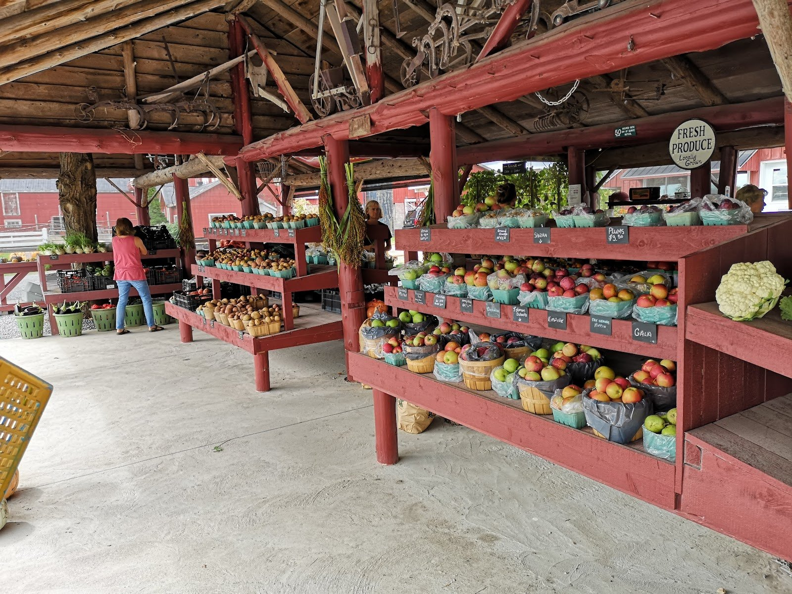

Seasonal produce
“Gorgeous produce, super selection.” Beets, greens, pumpkins and squash in season, and “their garlic is outstanding!”
Source: Sue Graff and other Google reviewers; listing photos
At the stand
No price list or menu is published. This is what customers say they found, in their Google reviews. Stock changes with the season.
“Gorgeous produce, super selection.” Beets, greens, pumpkins and squash in season, and “their garlic is outstanding!”
Source: Sue Graff and other Google reviewers; listing photos
Butter tarts, chocolate chip cookies, date squares, pistachio cake and cheddar jalapeño biscuits.
Source: Google reviews
“Whether it’s the lunches or the baked goods you will never go wrong… I highly recommend trying the milkshakes.”
Source: Joanne Zantingh, Google
Preserves and dairy products alongside the baking.
Source: Google reviews via exa.ai copy
Housewares like rolling pins and charcuterie boards.
Source: Lisa G, Google
Goats, sheep and chickens “walking around everywhere.”
Source: d rhodes, Google; listing photos

Word of advice
“The chocolate chip cookies will send you over the edge, the date squares are amazing… Bring bags for your produce, and get ready to veggie out!!”
Sue Graff, Google review
Family owned and operated, according to a longtime customer.
The farm
Photos from the Google listing, including ones customers posted. Tap to enlarge.
Reviews
4.7 ★ from 66 Google reviews (checked Oct 31, 2026). Quotes are word for word; “…” marks a trim. Named reviews were read on Google directly. “Via exa.ai copy” means a public copy of the Google listing that doesn’t show reviewer names.
★★★★★
“Cute farm stand and a bakery. Also has some housewares like rolling pins, charcuterie boards, etc.”
★★★★★
“Great market for local produce, amazing butter tarts!! Love the chickens walking around everywhere.”
★★★★★
“This is one amazing vegetable stand!! Situated just outside Picton, Ontario, it has gorgeous produce, super selection, a bakery...word of advice, the chocolate chip cookies will send you over the edge, the date squares are amazing...everything is fresh and gorgeous. Their garlic is outstanding! Bring bags for your produce, and get ready to veggie out!! 😋”
★★★★★
“This is a quiet little bakery with some wonderful options. We had their pistachio cake and Cheddar Jalapeno Biscuits, both were fresh and delicious. Would definitely recommend if you're in the area.”
★★★★★
“I love this cafe/bakery. Family owned and operated. The food is excellent, whether it's the lunches or the baked goods you will never go wrong. Warm, welcoming atmosphere. I highly recommend trying the milkshakes. They are soooo yummy.”
★★★★★
“Lots of in season fruits and veggies. We shop here whenever we are in or around Picton.”
★★★★★
“Wonderful fresh produce and a shop you get baked goods and dairy products and more!”
★★★★★
“Lots of fresh extremly high quality seasonal fruit and veg around. The bakery has delicious pastries and preserves and lots more to discover. Definitely worth a visit if your passing by or staying in the area!”
Hours from the Google listing (checked Oct 31, 2026): Wed–Sat 8:30 a.m.–5:30 p.m. Farm stands can change hours with the season, so call ahead in winter.
13644 Loyalist Pkwy
Picton, ON K0K 2T0
On Highway 33 just outside Picton. Wheelchair-accessible entrance and parking (per Google).
Phone from the Google listing. No website; Facebook only.